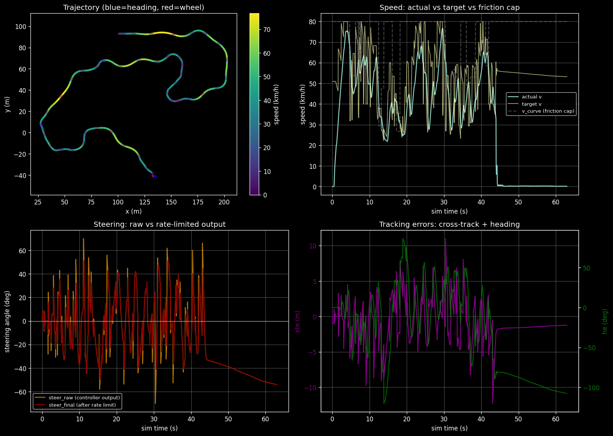
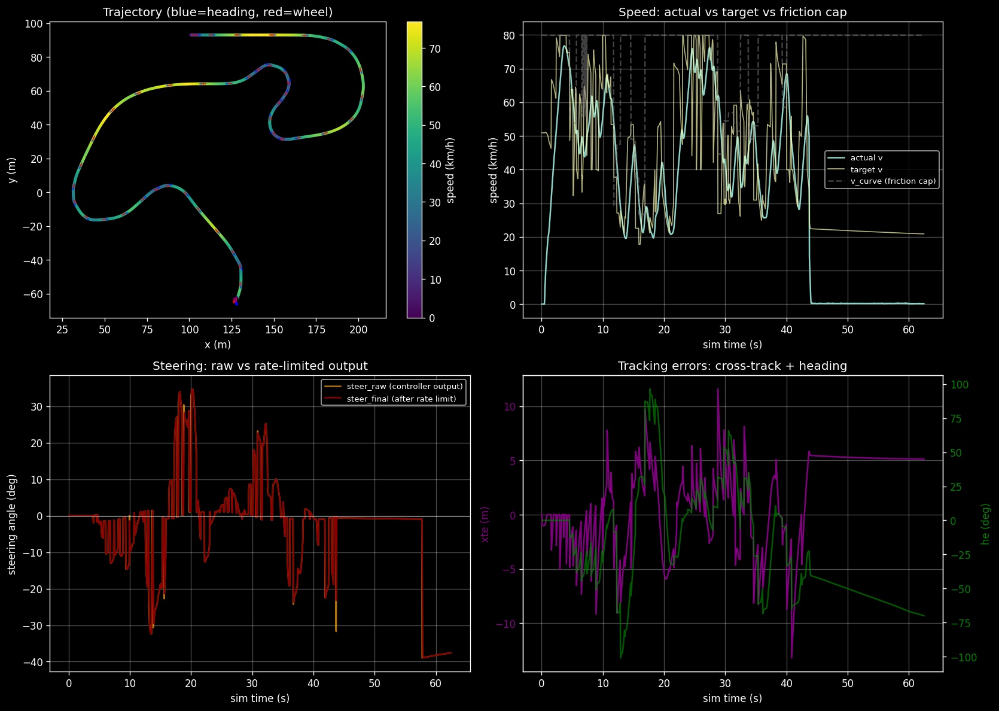
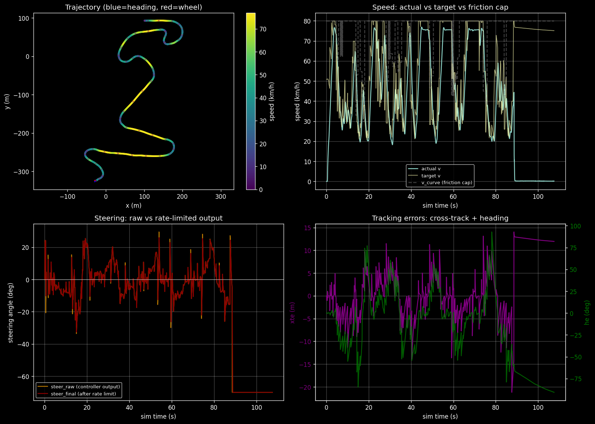
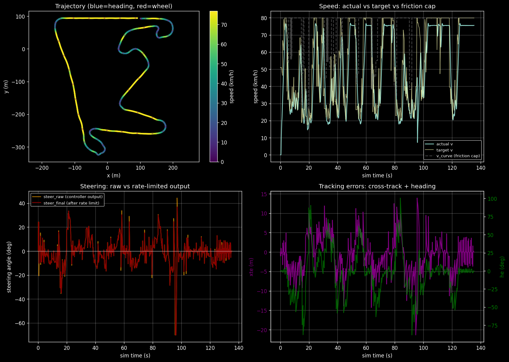
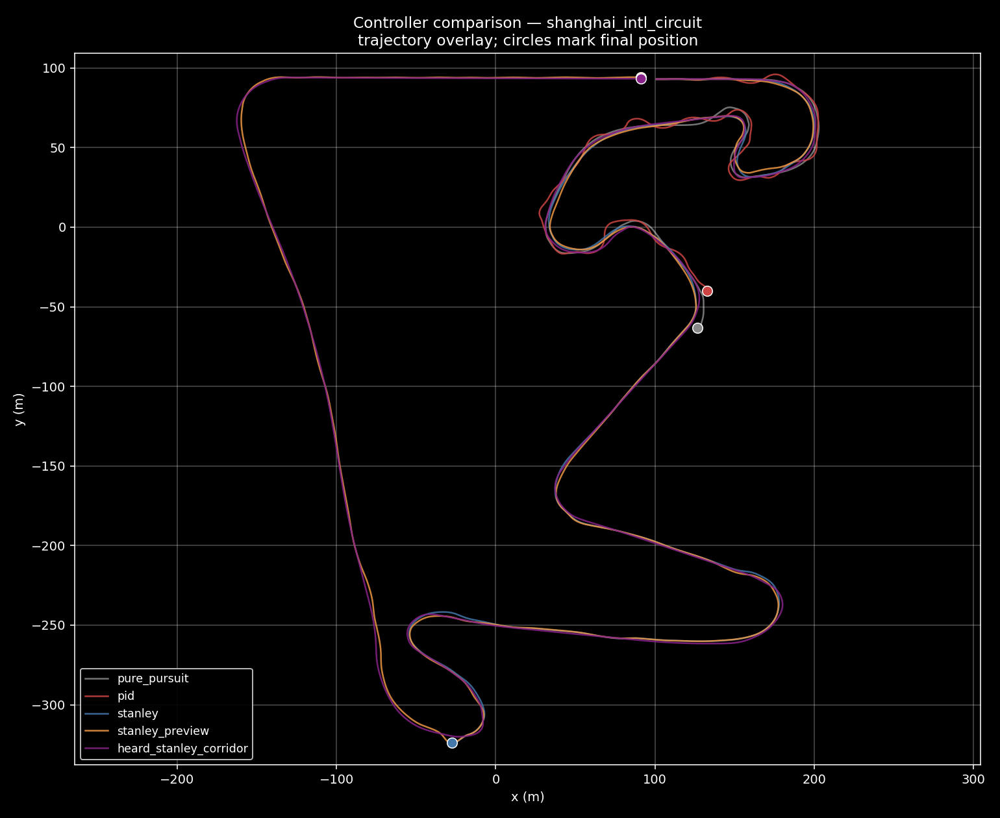
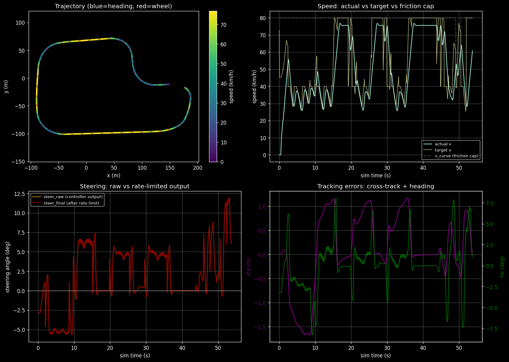
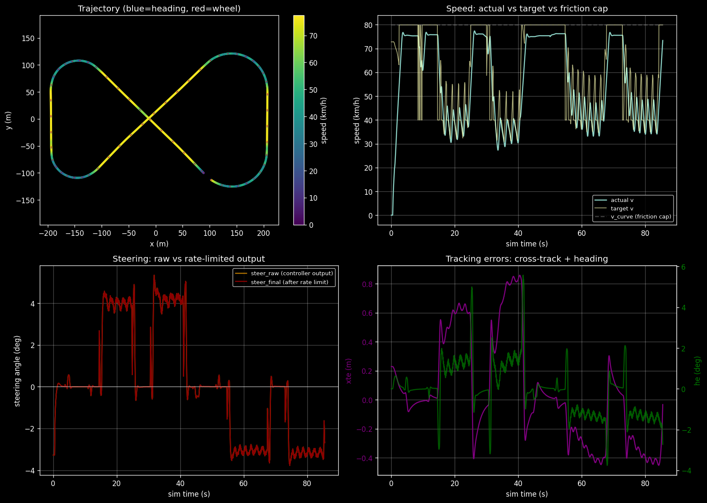
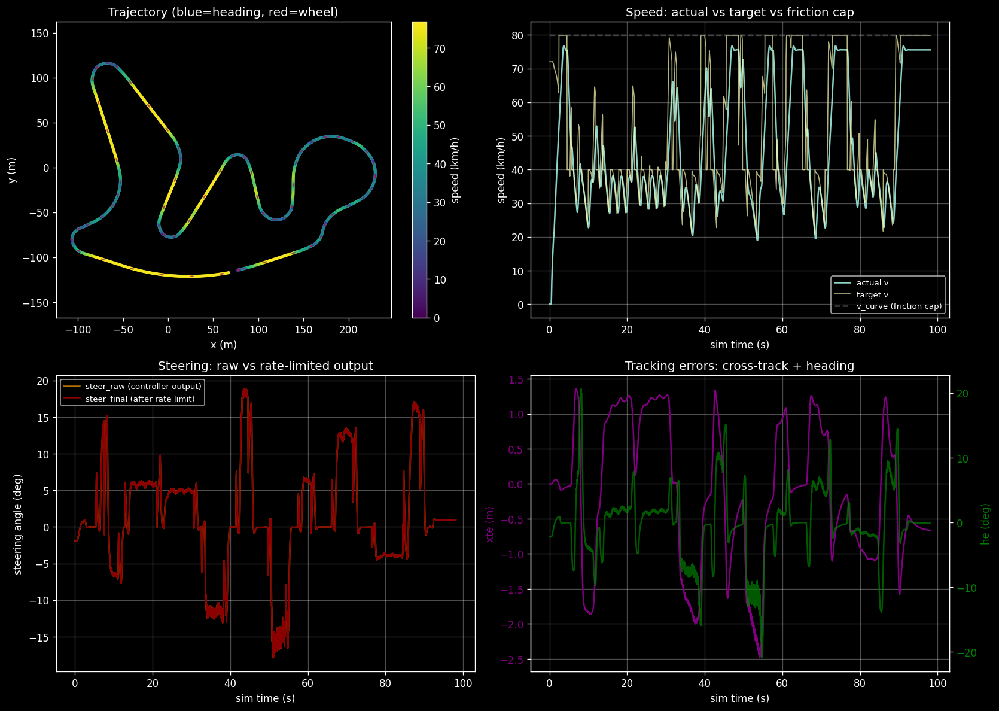
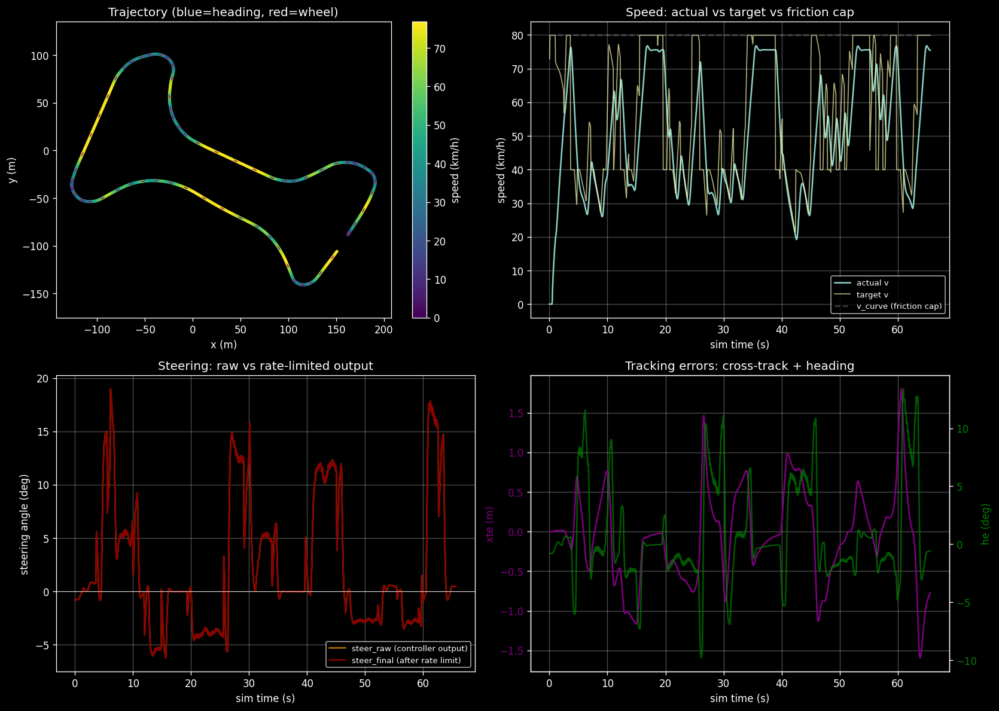
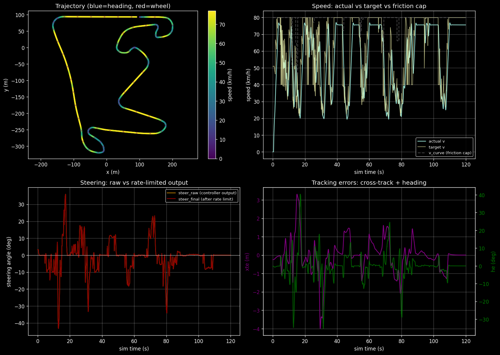

GRAIC is a driving simulator built on CARLA. Normally the goal is full self-driving from cameras; for this project I was instead asked to build the controller, the loop that turns “where the path is” into “how much to steer.” Four standard controllers from the course material, then a fifth I built after seeing what they all got wrong.
How it works
1 · CARLA gives state
Position, heading, speed, and the upcoming waypoints + lane boundaries.
2 · agent.py computes commands
My code picks a target speed and steering angle every tick.
3 · CARLA applies them
The simulator drives the car with the throttle, brake, and steering I asked for.
Milestones
M1. Get the car moving.
M2. Pull CARLA’s vehicle parameters into the controller and finish at least one track.
M3. Finish every track, and finish them faster.
1 · PID
PID is the first controller anyone learns: look at how far off the path you are, multiply by gains, steer. The three knobs are P (the error right now), I (error piling up over time), and D (how fast the error is changing).
The catch: PID has no preview. By the time it reacts, the next sample has already flipped to the other side. The steering reverses, amplifies, and saturates. PID gets within one waypoint of finishing on the easiest map and fails much sooner on the rest.
How it works, step by step
Each tick, find the closest point on the path to the car.
Measure how far off the path the car is (cross-track error) and which way the car is pointing relative to the path (heading error).
Estimate how fast the cross-track error is changing.
Multiply each of those three values by its own gain and add them up.
Clamp the result to the steering limit and send it to the car.
PID on Shanghai · the steering oscillates and pins to the stop on the first bend.

Trace · stuck after 53 of 151 waypoints on Shanghai. One waypoint short of a lap on t1.
:::
2 · Pure Pursuit
Pure Pursuit is the first controller that looks ahead. Pick a point a fixed distance in front of the car (the lookahead point), draw an arc from the car to that point, steer along the arc. Same thing a real driver does looking down the road.
The lookahead distance is a trade-off you cannot win: too short and the car oscillates; too long and the arc cuts straight across the inside of every corner (the apex), into the curb. Laps t1, fails everything else.
How it works, step by step
Pick a point on the path that is \(L_d\) meters ahead of the car.
Measure the angle \(\alpha\) between where the car is pointing and the line from the car to that point.
Compute the arc that starts at the car, faces the same direction as the car, and ends at the lookahead point.
Steer along that arc, clamped to the steering limit.
\[
\delta = \arctan\!\left(\frac{2 L \sin\alpha}{L_d}\right)
\]
Pure Pursuit on Shanghai · the car cuts the inside of tight bends and stops on the curb.

Trace · laps t1 in 54.8 s; stuck on every harder map. The lookahead-vs-apex trade-off is geometric, not a tuning issue.
:::
3 · Stanley
Stanley is the cleanest of the four. It uses two pieces: a heading correction (match the path’s direction) and a sideways correction wrapped in arctan so it stays gentle at high speed.
It gets the furthest of any standard controller, two-thirds of the way around Shanghai, but the 5 m waypoint spacing makes the path jagged, and Stanley reacts to every jag. The lateral law is right; the path it is chasing is too rough.
How it works, step by step
Find the closest point on the path to the front axle of the car.
Measure heading error: the angle between the path’s direction at that point and the car’s direction.
Measure how far sideways the car is from the path (cross-track error).
Add the heading error to arctan(k · cross_track / (v + ε)). The arctan bounds the sideways term; the v makes the correction softer at high speed.
Symbols:\(\psi_e\) is heading error. \(e_y\) is sideways (cross-track) error. \(v\) is the car’s speed. \(\varepsilon\) (“epsilon”) is a tiny positive constant in the denominator that prevents dividing by zero when the car is stopped (v = 0).
Stanley on Shanghai · smooth in straights, wobbles in broad turns where the waypoints are jagged.

Trace · reaches 102 of 151 on Shanghai, 37/38 on t1, fails sooner on t2/t3/t4. The lateral law is right; the reference path is too jagged.
:::
4 · Stanley + Preview
If Stanley only reacts after the error has built up, the fix is to give it preview. I added a feedforward term proportional to how much the path bends a short distance ahead. The road curves, the steering curves with it.
This is the first controller in the lineup that laps Shanghai (135.4 s). Preview didn’t fix the tighter maps, but finishing matters more than shaving seconds.
How it works, step by step
Run Stanley exactly as above to get a base steering value.
Look at the path a preview distance ahead and measure its curvature there.
Add a feedforward term k_ff · curvature_preview to the steering value.
New symbol:\(\kappa\) (“kappa”) is the path’s curvature — a measure of how tightly the road is bending right at that point. Roughly, \(\kappa = 1 / \text{radius}\). A straight road has \(\kappa \approx 0\); a hairpin has high \(\kappa\). \(\kappa_{\text{preview}}\) is the curvature read a short distance ahead of the car, not at the car’s current position.
Stanley + Preview on Shanghai · the car anticipates the bends and finishes the lap.

Trace · LAP on Shanghai in 135.4 s. First controller in the lineup to finish a hard map.
:::
5 · My custom controller (heard_stanley)
The four standard controllers all did two things wrong: they followed the raw 5 m waypoint list (jagged), and they drove through the middle of every corner. A real driver smooths the line and clips the inside.
Two changes. First, instead of following the waypoints, I build a corridor from the lane boundaries each tick and follow its smooth midline. The jagged-path problem disappears. Second, in any corner above a curvature threshold, the controller shifts its sideways target toward the inside, capped at 2 m. The Stanley law underneath is unchanged; only the target moved.
Result: laps all 5 maps. Shanghai in 119.8 s, 2.2 s faster than Yan’s baseline.
How it works, step by step
Each tick, build a corridor from the lane boundaries returned by CARLA.
Sample the corridor’s midline every 1 m to get a smooth, dense reference path.
Compute Stanley errors against the midline.
Look up how tight the path is curving at the car’s location.
If the path is bending hard enough, shift the sideways target toward the inside of the corner (proportional to the curvature, capped at ±2 m).
def heard_stanley_step(state, corridor, k, g, e_max, v_eps): midline = corridor.sample_midline(spacing=1.0) e_y = signed_cross_track_error(midline, state.front_axle) psi_e = wrap(midline.tangent_at(state.front_axle) - state.heading) kappa = midline.curvature_at(state.front_axle)# shift the target toward the inside of the corner, capped so the car# never gets within 2 m of the inside curb. e_y_set = clip(g * kappa, -e_max, +e_max) delta = psi_e + atan2(k * (e_y - e_y_set), state.v + v_eps)return clamp(delta, -delta_max, +delta_max)
The speed plan. Hard-capped at 22.2 m/s (80 km/h). Each path point gets a curvature-limited safe speed v_curve = √(a_lat_max / κ) using a 4 m/s² lateral budget (a real Tesla can do twice that, but I kept it conservative to stay off the curbs). A backward sweep makes sure the car can brake to those limits in time. Zero collisions across all five maps.
heard_stanley on Shanghai · smooth through the sweepers, clips the inside of the late-track corners.
Trace · 119.8 s, LAP 151/151. 2.2 s faster than Yan’s baseline.
:::
Same map, different results

PID · stuck
Pure Pursuit · stuck
Stanley · stuck
Stanley + Preview · 135.4 s
heard_stanley (mine) · 119.8 s
:::
How they stack up on every map
Controller
t1_triple (38 wp)
t2_triple (66 wp)
t3 (64 wp)
t4 (46 wp)
shanghai (151 wp)
Pure Pursuit
LAP 54.8 s
stuck 8 / 66
stuck 6 / 64
stuck 4 / 46
stuck 54 / 151
PID
stuck 37 / 38
stuck 8 / 66
stuck 20 / 64
stuck 28 / 46
stuck 53 / 151
Stanley
stuck 37 / 38
stuck 8 / 66
stuck 19 / 64
stuck 3 / 46
stuck 102 / 151
Stanley + Preview
stuck 37 / 38
stuck 8 / 66
stuck 19 / 64
stuck 3 / 46
LAP 135.4 s
heard_stanley (mine)
LAP 53.7 s
LAP 85.5 s
LAP 98.1 s
LAP 65.6 s
LAP 119.8 s
What I learned
The custom controller arrived in steps, each one fixing what the last one broke.
Standard controllers drove through the middle of every corner. So I made mine hug the inside.
Hugging worked in corners but also on straightaways, where there is no inside. The car drifted toward the curb.
So I made the hug scale with how tight the turn is. Straight road, no shift. Tight corner, big shift.
That clipped the inside curb on the tightest bends.
Capped the shift at 2 m. Racing line on broad sweepers, no curb on tight ones.
Take-away: it was not the control law that needed changing. It was what the controller was aiming at.
My controller on every map
With how my controller performed on Shanghai, here is how it did on the other tracks.
t1_triple · 53.7 s · LAP 38 / 38

Mine 53.7 s · Yan baseline 45.0 s · Δ +8.7 s
t2_triple · 85.5 s · LAP 66 / 66

Mine 85.5 s · Yan baseline 74.0 s · Δ +11.5 s
t3 · 98.1 s · LAP 64 / 64

Mine 98.1 s · Yan baseline 82.0 s · Δ +16.1 s
t4 · 65.6 s · LAP 46 / 46

Mine 65.6 s · Yan baseline 57.0 s · Δ +8.6 s
shanghai · 119.8 s · LAP 151 / 151

Mine 119.8 s · Yan baseline 122.0 s · Δ −2.2 s
Thanks
Thank you to the ECE 484 course staff for accommodating me on this project, and leading one of the most fun and interactive classes I have ever taken. Thank you!
Questions?
References. The control laws used here come from ECE 484 lecture material (PID, Pure Pursuit, Stanley, friction-circle planning) and the course Machine Problems (MP1 introduced Pure Pursuit; MP2 / MP3 contributed scaffolding for the longitudinal planner). The CARLA simulator and the PoPGRI Race scaffolding (course staff) provided the simulation environment and baseline agent.py. The reference controller to beat was written by Yan Miao.